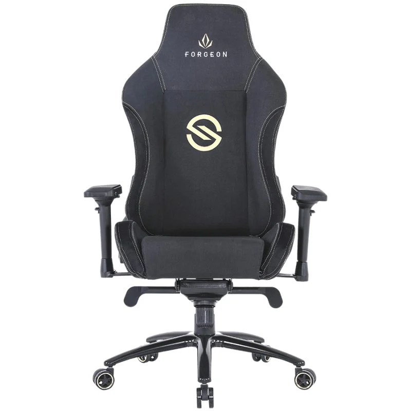

Forgeon Spica Fabric Silla Gaming Tela Transpirable Negra

Especificaciones
Reposabrazos 4D: La silla Spica, cuenta con uno de los mejores reposabrazos diseñados hasta la fecha, te permitirá ajustarlo tal y como lo necesites, tanto a izquierda como derecha, arriba o abajo, para que se acomode a tu brazo gracias a su ligero acolchamiento. Te permitirá disfrutar de largas jornadas frente a tu set up con una comodidad nunca vista hasta ahora
Cojín Magnético: Bienvenido al futuro, su cojín superior magnético, gracias a su imán de neodimio te permitirá ajustarlo, ponerlo o quitarlo cuando quieras, olvida esas incómodas y antiestéticas correas, esta silla viene del futuro para darte una experiencia nunca antes vista. Pero esto no es todo, además ambos cojines están hechos en Memory Foam, si aún no la has probado no conoces el verdadero confort, es una espuma que se moldea tanto a tu cuello como a tu espalda para que descanses durante su uso y no sufras malas posturas.
Mecanismo leap frog: Hablar del mecanismo, es hablar del corazón de la silla, hay muchos tipos de mecanismos y Spica lleva el mejor, sin lugar a dudas. El mecanismo es de tipo rana, el mismo mecanismo que llevan las sillas de alta gama. Aporta un extra de sujeción y balanceo. Gracias a sus palancas podrás regular la altura, activar o bloquear el balanceo, cuando lo pruebes no sabrás como has estado hasta ahora sin una silla así.
Extras insuperables: Además de todas sus características de alta gama, podrás escoger la Spica en 2 terminaciones textiles: cuero artificial y tela y a su vez Blanco, Negro o Gris para que se adapte a tus gustos y combine con tu setup. Estamos ante la silla perfecta, abre tu habitación a Spica. El futuro de las sillas gaming ha llegado, está a la venta en pccomponentes y se llama Forgeon Spica.